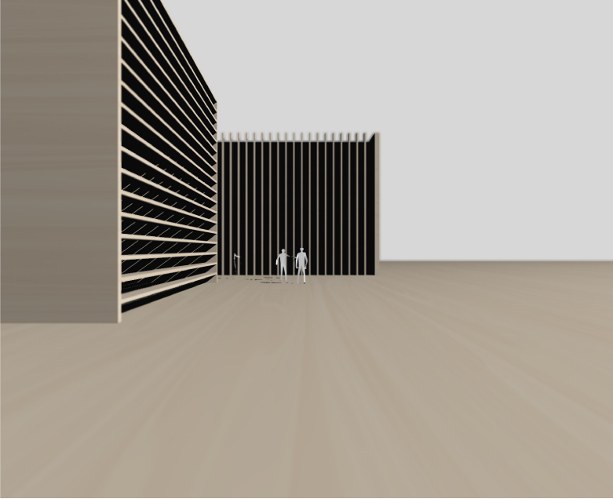
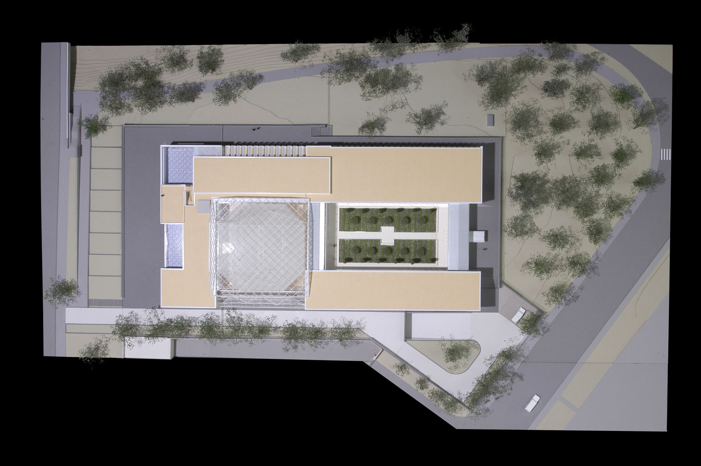

Large
- 
Open Doors
Maldonado, Uruguay
This project was inspired by the idea of opening new doors and paths to higher education in remote cities, far from the capital. The complex is organized in 9 cubes of diverse occupancy, from high-flexibility (classrooms) to low-flexibility (laboratories.) Large panels on the facade of each functional unit are opened like doors, generating virtual and physical connections with other units, as rhizomatic system.
Entry for the CURE Competition, 2009
Design Team: Alvaro Bonfiglio & Pablo Bonfiglio
Aga Khan Museum

2005-2011, Toronto, Canada
The Aga Khan Museum is inspired in the forms and shapes of precious stones. The exterior has been modeled to accentuate the varying qualities of light, and the interior has been crafted as a journey through a jewel. Following Maki’s idea, the spaces have the precision of crystal inside the structure of a cloud. In this project I worked as part of the design team during Schematic Design, Design Development and Construction Documents.
Principal in Charge: Fumihiko Maki; Project Director: Gary Kamemoto; Design Team: Kota Kawasaki, Masayuki Midorikawa, Masaru Sasaki, Alvaro Bonfiglio, Yoichi Honjo, Yoshiya Kamitamari, Ellen Krause. Architect of Record: Moriyama and Teshima.
- 
Delegation of the Ismaili Imamat
2005-2008, Toronto, Canada
Principal in Charge: Fumihiko Maki; Project Director: Gary Kamemoto; Design Team: Tatsutomo Hasegawa, Kota Kawasaki, Isao Ikeda, Makoto Otake, Alvaro Bonfiglio. Architect of Record: Moriyama and Teshima.
My participation on this project included the structural definition of the glass atrium (3D modeling), preparing study materials for team discussion, and client and media presentations. Also, I was involved in the construction of physical and virtual models and the production and coordination of architectural documents during Schematic Design and Design Development.
World Trade Center - Tower 4
2006 - 2012, New York, USA
Due to the scale of this project, during critical dates the whole workforce of the studio was drafted into it. I participated in the preparation of drawings and images for key media presentations, and the generation of 3D virtual and physical models for team discussion and client presentation.
Principal in Charge: Fumihiko Maki; Project Director: Gary Kamemoto; Design Team: Yoshiki Kondo, Isao Ikeda, Osamu Sassa, Masayuki Midorikawa, Yuki Yamada, Yoichi Honjo, Takeshi Mitsuda, Masahiro Ikawa, Jun Takahashi, Tohru Ohnuma, Kenichi Tokiwa, Akihiko Kunimoto, Yusuke Miyamoto, Tamaho Shigemura, Alvaro Bonfiglio. Architect of Record: Adamson Associates Architects.
Ford Calumet Environmental Center


2004, Chicago, USA
Finalist, Ford Calumet Environmental Center International Competition
The egg is the place where regeneration of the site’s lost biodiversity is initiated. It is also the synthesis of an indoor and outdoor environmental school. It is an indoor space with all the atmosphere and elements of an outdoor space. It is an exhibition area, but also a working space to studying the ecosystem and the rehabilitation of wildlife on the site and beyond. The egg-like structure is made of paper tubes and covered by a translucent membrane. Considering the requirements of the program and the condition of the site, this approach through sustainable materials was almost unavoidable.
Outside the paperegg we imagined the site design as the result of a flow of wind that would leave several waves or strokes on the landscape. Therefore, straw-like paper tubes are used to create random but somewhat concentric paper screens on the site. One of the screens intersects with the egg, becoming the structure of the complementary building. The screens navigate towards the entrances, inviting visitors to encounter and discover nature, without controlling or limiting the discovery of the spaces. The screens also mark areas designated for human activities to take place within the site, while not disturbing the new habitats.
Project Team: Kevin Yim, Alvaro Bonfiglio, Jin Taira. Structure: Arup Japan, Ryota Kidokoro, Hitoshi Yonamine; + VAN, Shigueru Ban; Mechanical: Arup Japan, Akiko Tanikawa; Incombustible Tech.: Funen, H. Kawabata. Chicago Partners: S. Conger Architects LLC: Susan Conger, Michael Karlovitz, Jinsuke Abe; Environmental Consulting: Eubanks & Ass; Community Advisor: Victor Crivello; Fire Specialist: Rolf Jensen & Associates Inc.